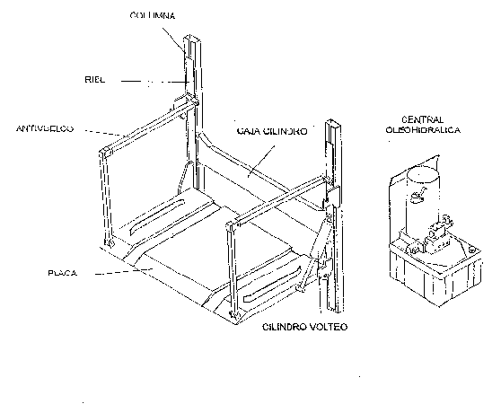

|
FICHA TÉCNICA
TECFOR |
 |
|
Plataforma elevadora de carga marca TECFOR , modelo CG-700-I para distribución de cilindros y termos de gas , para montar sobre camión
Grupo electrohidráulico
: incluye motor-bomba para 12 ó 24 V y estanque.
Con 2 rieles de 100 mm de ancho incluidos en base plataforma , sin pendiente en un largo de 1.000 mm y rampa de acceso de 300 mm en sección sin rieles . Volteo con cilindro hidráulico, que por seguridad debe ser accionado por 2 switch simultáneamente , después de desviar flujo hidráulico con válvula selectora . Válvulas reguladoras de flujo para ajustar velocidad de elevación y volteo de plataforma . Montaje a realizar en nuestra fábrica en 3 días . Se detallarían los requerimientos sobre los pilares traseros en que se montaría la plataforma , como también la distancia que los debe separar . Garantía : 1 año desde su instalación , en nuestra empresa . Y recuerde : TECFOR tiene
certificación ISO 9001 de su sistema de gestión de calidad
.  |
|

|